Deploy de NGINX no OpenShift
Integrantes do grupo:
- Khayo Chahine de Macedo — RM368194
- Andreza Maciel Medeiros — RM369698
- João Guilherme de Oliveira Almeida — RM366119
- Lucas Bessi de Souza — RM369293
Disciplina: Cloud Builders
Data da execução: 14/10/2026
Projeto: cloubuilds-project-kc
1. Criação do volume persistente — bônus 2
Aplicamos 1-pvc.yaml para solicitar 1 GiB com acesso ReadWriteOnce. O PVC web-pvc ficou Bound, vinculado a um PersistentVolume pela StorageClass nfs-storage. Esse volume armazena a página HTML da aplicação. Utilizamos kubectl e oc para aplicar e consultar os recursos no OpenShift.
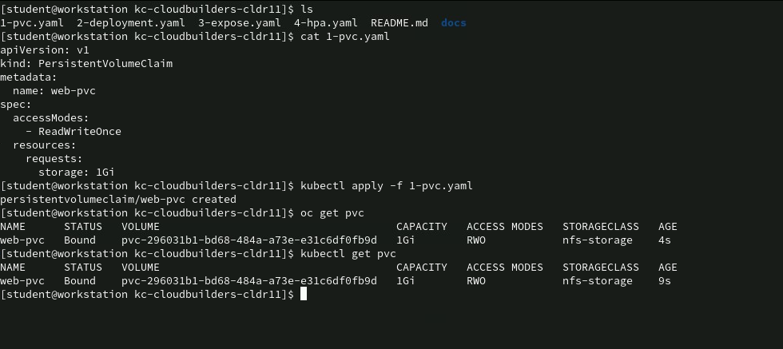
Criação do PVC e vínculo com o PV2. Deployment e montagem do volume
Aplicamos 2-deployment.yaml e o pod ficou Running, 1/1 Ready, com respostas HTTP 200 nos logs. A imagem nginxinc/nginx-unprivileged:stable-alpine executa NGINX na porta 8080. O initContainer cria o HTML apenas se o arquivo ainda não existir.
A aplicação do manifesto criou o Deployment. O pod passou de 0/1 para 1/1 Ready, e os logs registraram o início do NGINX e respostas às probes.
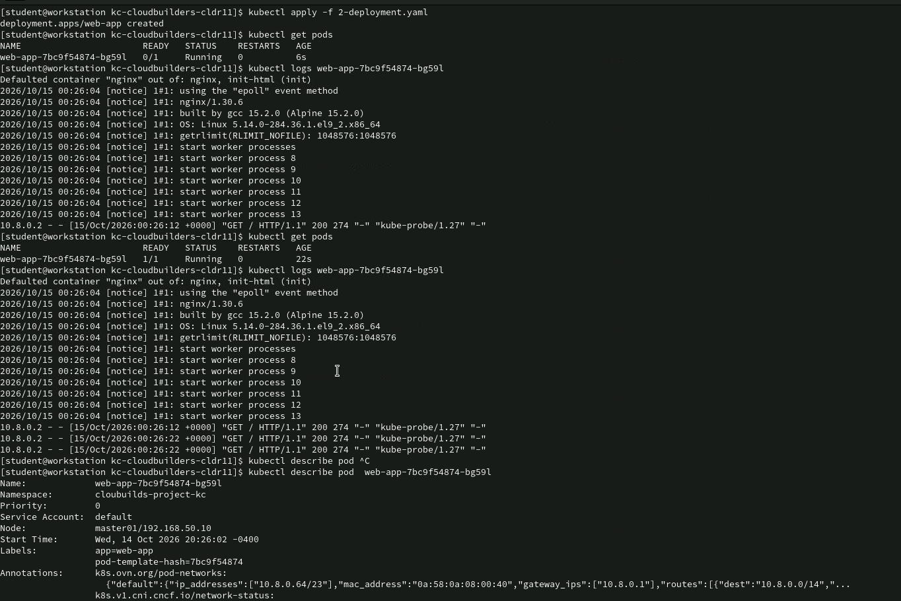
Aplicação do Deployment, evolução do pod e logs do NGINXA inspeção do pod confirma o PVC web-pvc no volume web-storage, montado em /usr/share/nginx/html para leitura. Também mostra request de CPU de 100m, limit de 200m e probes HTTP. A afinidade mantém as réplicas no mesmo nó para compartilhar o volume ReadWriteOnce.
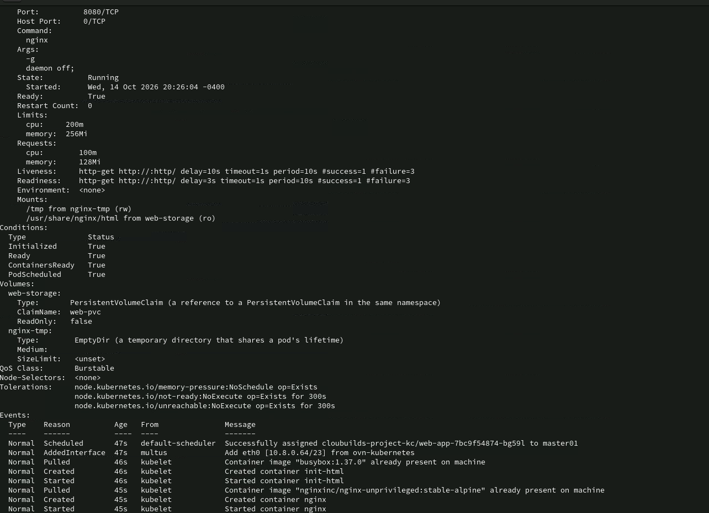
Pod pronto, recursos e montagem do PVC3. Service, Route e acesso à aplicação
Aplicamos 3-expose.yaml, criando web-service e web-route. O Service encaminha a porta 80 para a porta 8080 dos pods. A Route usa TLS edge e redirecionamento para HTTPS. A página foi acessada com sucesso em https://web-route-cloubuilds-project-kc.apps.ocp4.example.com.
A aplicação do manifesto confirmou a criação do Service e da Route; a consulta da Route mostrou o endereço publicado e a terminação edge/Redirect.
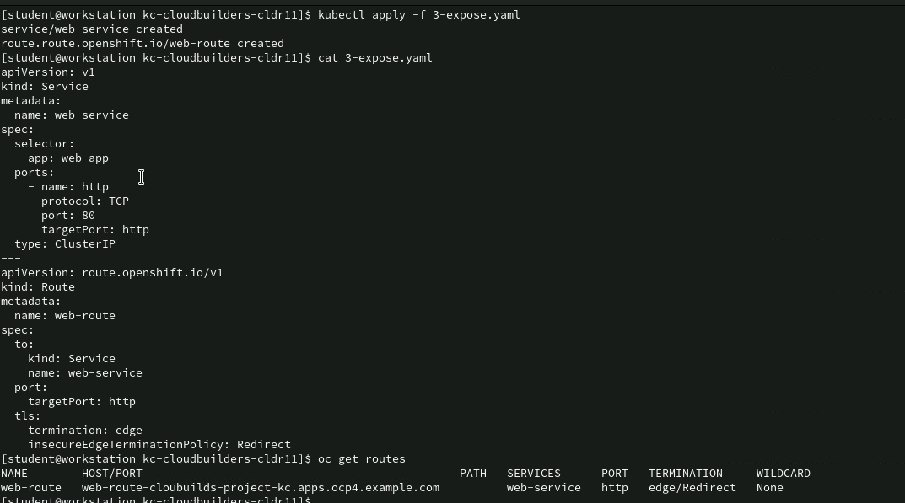
Aplicação do manifesto de Service e Route e consulta do endereço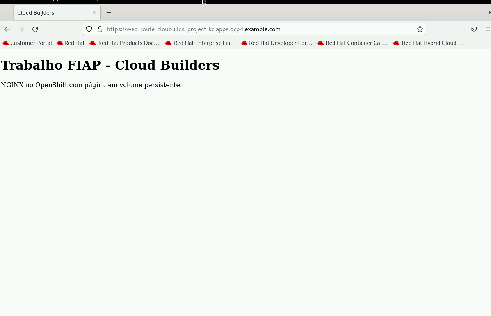
Página NGINX acessível por HTTPS4. Configuração do HPA — bônus 1
Aplicamos 4-hpa.yaml, apontando para o Deployment web-app. Inicialmente utilizamos mínimo de 1 réplica; depois alteramos para mínimo de 2 e máximo de 4, conforme a configuração final do teste. O alvo é 50% do request de CPU de 100m, equivalente a uma média de 50m por pod. Após a atualização, foram observados dois pods Running.
As consultas iniciais mostraram métricas <unknown> enquanto ainda não estavam disponíveis. O primeiro print registra a criação do HPA e a edição do mínimo de réplicas; o seguinte mostra a aplicação da configuração final e os dois pods prontos.
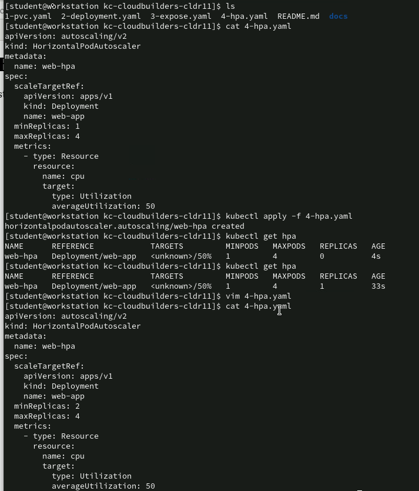
Criação do HPA e alteração do mínimo de réplicas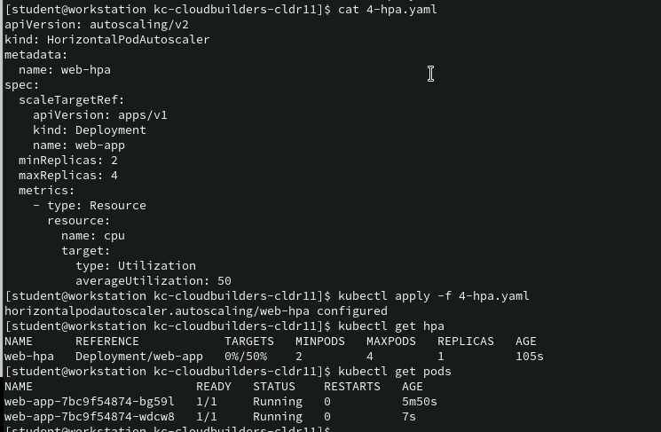
Configuração final do HPA e dois pods em execução5. Recursos no console do OpenShift
O console do projeto mostra o Deployment web-app com dois pods em execução, associado ao HPA web-hpa, Service web-service e Route web-route.
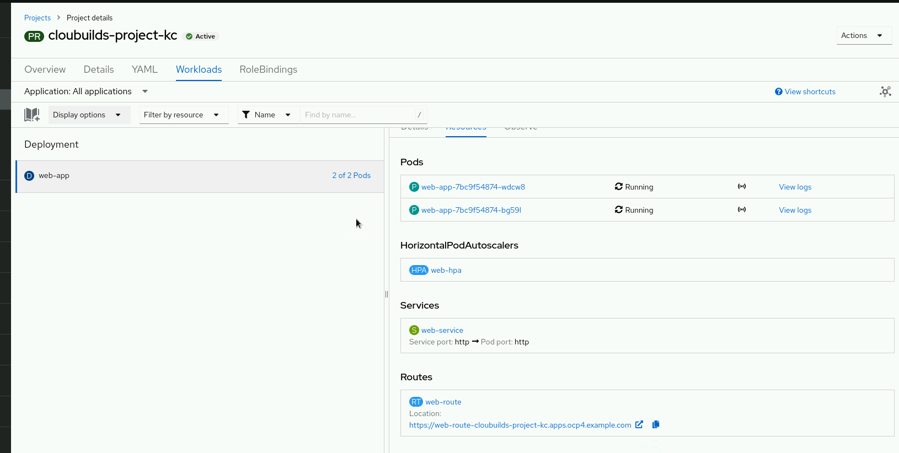
Deployment, pods, HPA, Service e Route no consoleA tela do PVC confirma web-pvc em estado Bound, capacidade solicitada e vinculada de 1 GiB e modo de acesso ReadWriteOnce.
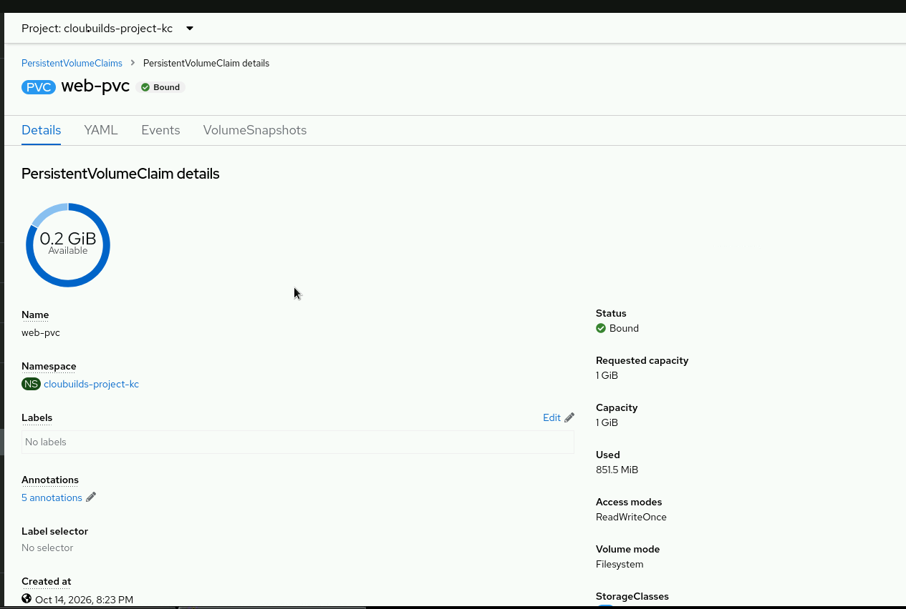
Detalhes do PVC no console do OpenShift6. Teste de expansão sob carga
Executamos o pod load-generator para gerar requisições. O HPA inicialmente mostrou 50%/50%, com duas réplicas. Em seguida, a utilização chegou a 73%/50% e surgiu um terceiro pod; na consulta seguinte, o HPA registrou 3 réplicas, com os três pods 1/1 Ready. A evidência comprova expansão sob carga, além da criação do recurso HPA. Ao finalizar, excluímos o gerador de carga.
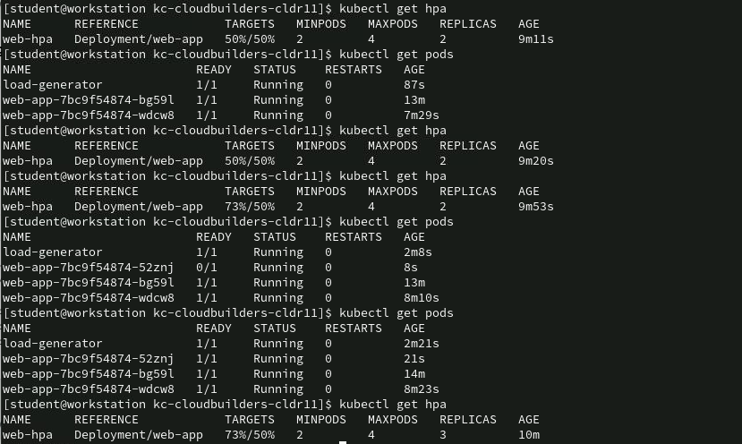
CPU acima do alvo e expansão de dois para três podsO console também registra aumento de CPU e tráfego de entrada durante a carga, além das métricas de memória e filesystem. A expansão de réplicas está comprovada pela listagem de pods e HPA acima.
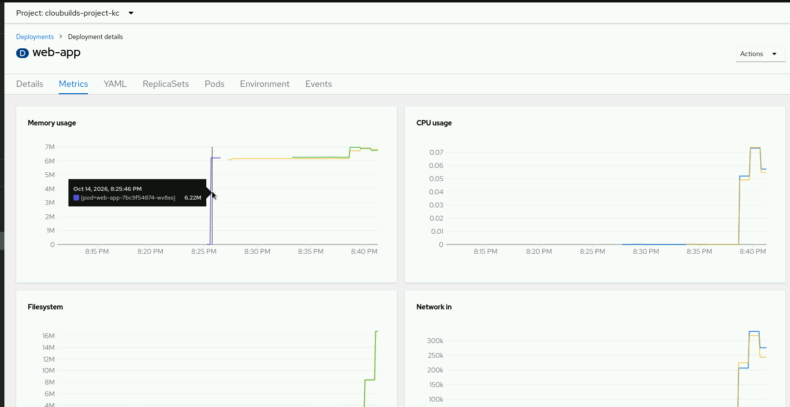
Métricas do Deployment durante a carga no OpenShift7. Teste de persistência e resultado
Lemos /usr/share/nginx/html/index.html, excluímos os pods da aplicação e aguardamos o Deployment completar a recriação. Os novos pods ficaram Running, 1/1 Ready. A nova leitura manteve o HTML e o comentário original: Volume inicializado em 2026-10-15T00:24:39Z por web-app-7bc9f54874-wv8xs. A marca em UTC permaneceu mesmo com a troca dos pods, comprovando que o arquivo foi preservado no volume.
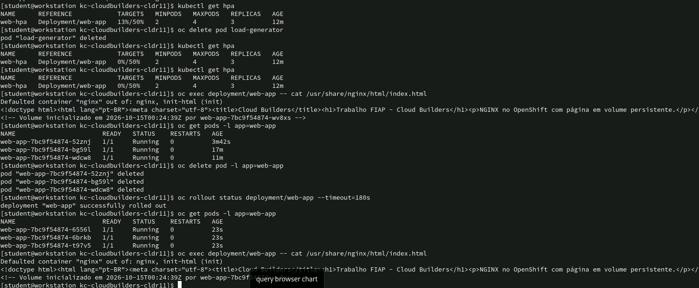
Mesmo HTML e marca original após recriar os podsConcluímos o deploy da aplicação containerizada no OpenShift, com acesso HTTPS, HPA testado de duas para três réplicas e armazenamento persistente comprovado após a recriação dos pods. A expansão fica limitada à capacidade do nó compartilhado pelas réplicas.
Arquivos entregues: 1-pvc.yaml, 2-deployment.yaml, 3-expose.yaml, 4-hpa.yaml e este relatório. Todas as 12 capturas da execução estão incorporadas neste relatório e armazenadas em docs/prints/.